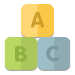

Features » Category Specific
» Category Specific
Category Specific Features
Category Specific Questions
Each category can have as many of these types of questions attached to it as you want. Once attached to a category these questions will appear within the
place a listing process when that category is chosen. These questions can be of any number of types setup within the system: basic text box, dropdown,..etc.
Category Specific Browsing Filters

The browsing filter provides field filtering ability within the category browsing feature. While that's powerful enough you have the additional ability
to configure this feature on a category by category basis. You can configure any category specific field you have configured for use in a category as an
element to filter classifieds and auctions by in the browsing filter..
Category Specific Pricing
Category Specific Column Display
TYou can control not only the fields used but whether they are displayed as a column within the category browsing results. You can do this on a category by
category basis. You can control the display of site wide optional, multi-level and standard field types as columns.
Category Specific Field Configurations
This probably one of the more powerful and useful features in the software. This feature allows you to customize fields used and displayed within a category.
These category specific configurations not only affect the category browsing feature but can control the fields displayed in any module displayed within the
category browsing feature. This controls site wide optional, multi-level and standard field use as well as display as a column in the category browsing results.
Category Specific Header Elements
Control Listing Types by Category
If you are using the GeoCore Max version of the software your clients have the ability to place auctions and classified ads. You may not want those two
listing types to be in the same category. This feature allows you to control classified ads, auction or both are allowed within a specific category. This
feature is used a lot to setup specific want ads categories in our clients sites.
Category Specific Description Display
If you choose to display a description within the category browsing results you have the ability to control how it displays on a site wide as well as
category by category basis..
Category Specific Templates
You have the ability to set the templates used when a specific category is browsed. You can set category home, category 2nd page, listing details for classified
ads display, listing details for auction details display, page template for details page, search and search results, grid browsing,
list browsing, gallery browsing templates and more..
Category Specific Listing Duration
You have the ability to use the site wide duration settings but also you can set classified and auction duration choices on a category by category basis. So you
can let all categories use the site wide durations by not setting any. Or you can set some listing durations for some categories and let the site wide work
in the rest or you can set category specific listing durations for each category.
Category Specific Default Order
This allows you to control by which field listings are ordered by within the category browsing results. While you can set a site wide configuration for this
you can override that on a category by category basis. By default results are ordered by date placed but you can order those results on any number of
fields you have configured for use within that category. You can control individual default orders for auctions and classified ads